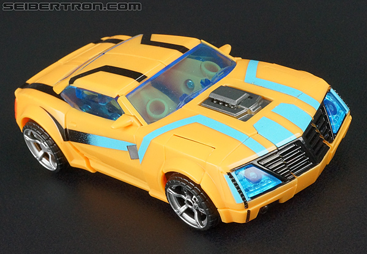
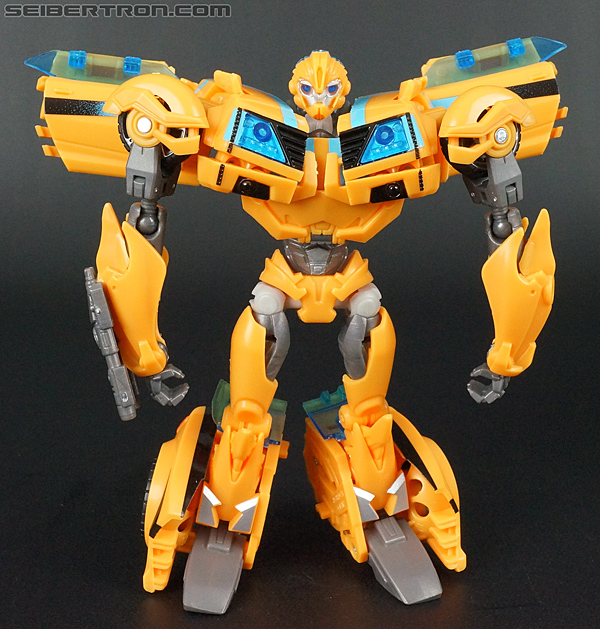
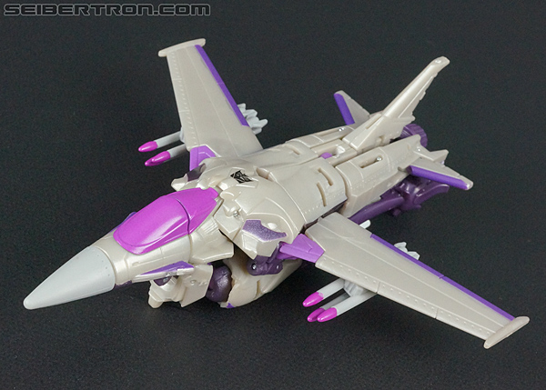
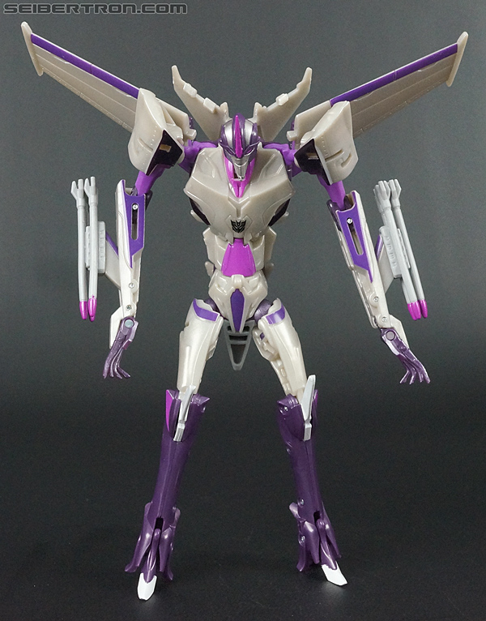

"Ultimate
Opponents" Giftset [Toys "R" Us Exclusive]*
"Ultimate
Opponents" Giftset [Toys "R" Us Exclusive]*
Price
: $35 (CDN) (comes with a DVD
w/ Prime episodes on it)
Overall Rating
: 8.1
(NOTE: Because this set is composed of repaints,
this is not a full-blown review. This mainly covers any changes made to
the set and the color scheme, and merely compares it to the original versions
of these molds. For a review on the original Prime First Edition Bumblebee
toy, go
here
. For a review on the original
Prime First Edition Starscream toy, go
here
.)
Bumblebee


Allegiance
: Autobot
Size
: Deluxe
Difficulty of Transformation
: Medium
Color Scheme
: Dull orangish yellow,
swirly metallic gunmetal gray, and some black, very light gray, light electric
blue, silver, translucent blue, dark metallic gunmetal gray, and red
Individual Rating
: 8.2
Like most Bumblebee redecos
these days, Bumblebee retains most of the core colors that he had on his
original toy. The main plastic color-- though still yellow-- has been switched
out for a "movie-esque" orangish yellow, pretty much the exact shade seen
on the
NYCC 2011 exclusive Bumblebee
toy.
However, in contrast, the transparent blue plastic is still the same shade
(maybe slightly brigher) on this toy that it was on the original First
Edition Bumblebee mold, and the placement of the vehicle paint apps are
also the same as on that original release. The most obvious difference
is that the front portion of the stripes is now a bright, electric blue,
which fades in a pretty cool manner to Bumblebee's usual black stripes
about halfway down his sides in vehicle mode. This makes it look like he's
souped up on "regular Energon", which is a pretty decent effect for an
exclusive repaint. That said, the blue doesn't quite "fit in" with the
dull orangish yellow as well as regular black does. The orange on the side
of the headlights has also been replaced with more of this electric blue
shade. The robot mode-specific paint apps and colors, in contrast, are
all identical to his NYCC 2011 version, making this a weird sort of mix
of both of the other versions of this mold with bright blue highlights.
No mold changes have
been made to this version of Bumblebee.
Starscream
w/ Leland "Silas" Bishop & MECH Soldier



Allegiance
: Decepticon
Size
: Deluxe
Difficulty of Transformation
: Medium
Color Scheme
:
Light brownish gray, dark purple, and some black, moderately light purple,
silver, light pale gray, and light pinkish purple
Individual Rating
: 8.0
Starscream, on the other
hand, has a fairly substantially different color scheme for this vs. pack.
His main color is still gray, but it's more of a brownish gray instead
of a bluish gray. Generally, I think this particular shade is just generally
duller and not as unique as the original First Edition Starscream's main
color, and is more on the blah side. What DOES interest me about Starscream's
new scheme are his more secondary colors-- namely, his different shades
of purple, which I assume are meant to be him doped up on "Dark Energon"
just like Bumblebee has "regular Energon" paint apps. The darker shades
reveal themselves a bit more on the wings, arms, and legs of the robot
mode, while a much lighter, almost pink shade of the color is used on his
cockpit and missile tips. It's an interesting contrast, but the darker
purple looks considerably better against the brownish gray; with the pink,
you've got a light color next to a light color, and it doesn't look as
good as it could've been. There's also a few silver and black paint apps
in his robot mode on appropriate places like his knee spikes, head, and
shoulders to help round things out a bit more (though I wish some more
black paint had been used). They look pretty nice, but I think a few too
many paint apps were "saved" for the robot mode at the expense of the vehicle
mode-- the main body in particular just looks way too bland in jet mode,
being all brownish-gray. The original First Edition mold just seems to
have a few more paint apps in general, as well.
No mold changes have
been made to this version of Starscream.
This set also comes
with two minifigures-- namely, of the terrorist human organization MECH,
consisting of a random MECH trooper and their leader, Silas. Both are detailed
quite well (except for Silas' sometimes-wonky eyes)-- both in terms of
their mold detailing and their paint apps, which blend the various details
together in a nice military-esque deco that is, of course, show-accurate.
Their proportions are also pretty good, but, unfortunately, they can't
really move, so they're very much just little figurine accessories, and
not nearly enough of a draw for someone to consider getting the set just
for them. They DO fit in size-wise perfectly with the
figurines
of the kids
, however.
"Ultimate Opponents" Bio:
With his grip on power weakening, Megatron
finds himself vulnerable for the first time, and Starscream is there to
take advantage of it. But with leadership within his reach, Starscream
must still deal with Bumblebee and the Autobots-- a truly tough challenge
to overcome.
The "Ultimate Opponents"
giftset is mostly recommended for those who either A. are completists or
B. can't find both First Edition Starscream AND Bumblebee for a reasonable
price, and also like MECH on top of that. Bumblebee's color scheme is alright
enough, but too similar to his other color schemes to be much of a draw
itself. Starscream has a nice "Skywarp-lite" deco, but all the brownish
gray plastic on him is a bit of a turnoff. The MECH figurines are nice
little accessories, but little plastic statues and nothing more. If you've
already got the original versions of either of the TFs in this set, this
is otherwise an easy pass, despite both of them being good molds.
Reviews by Beastbot
*In addition to being a Toys "R" Us exclusive, this set was not released
in the U.S.-- only in Canada and in some Asian markets. (Hence why the
given price is in Canadian dollars.)
(Pics from
Seibertron.com
.)
Back to Transformers:
Prime Index